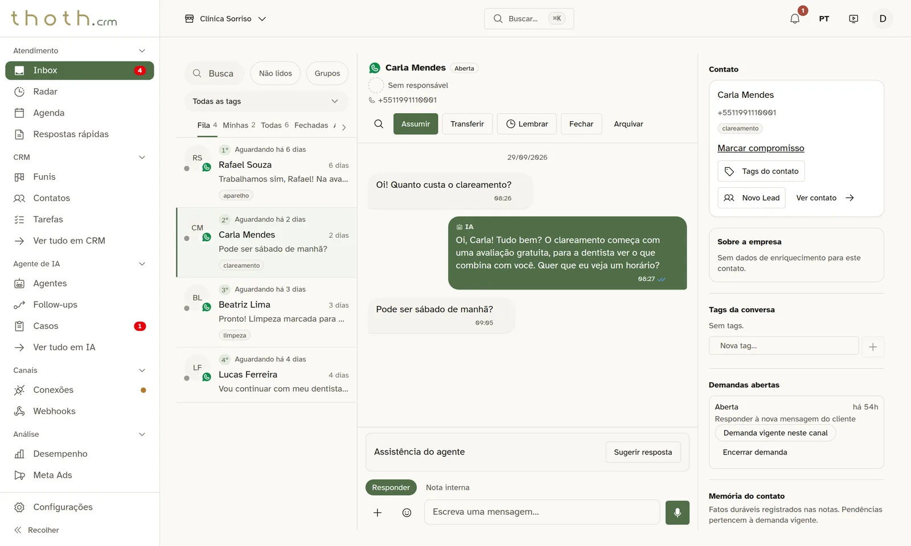
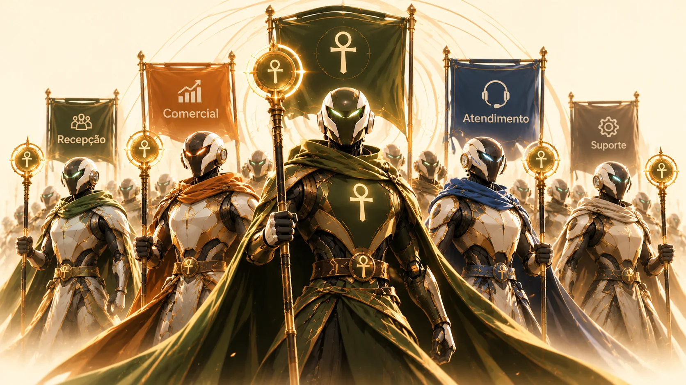
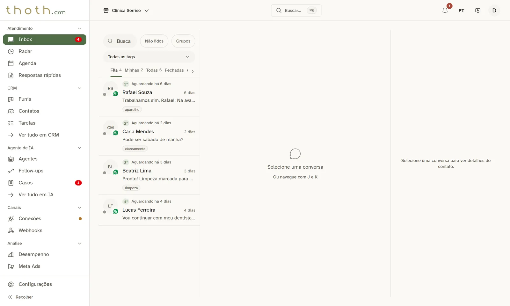
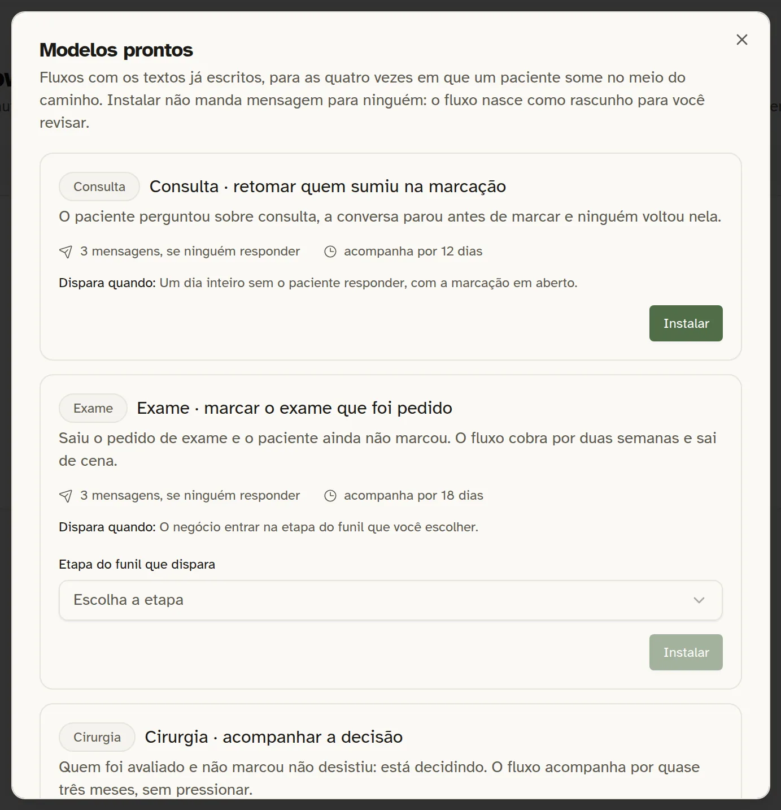
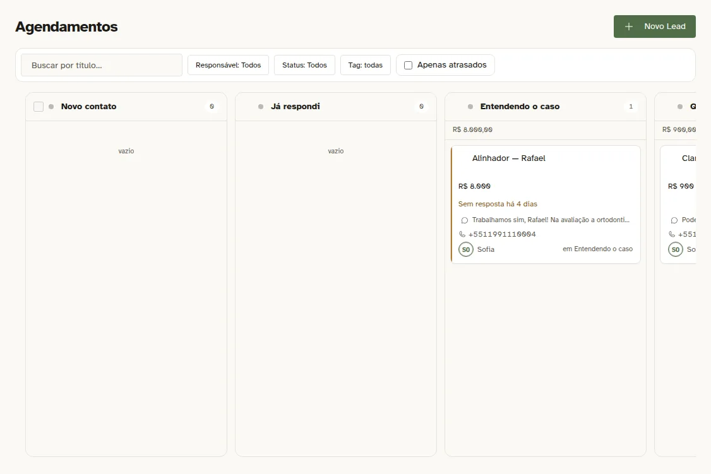
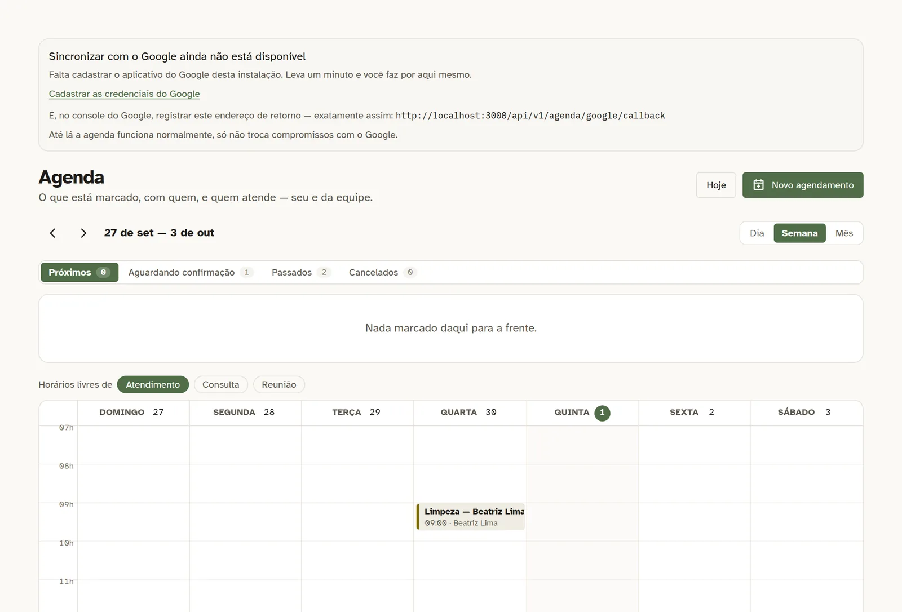
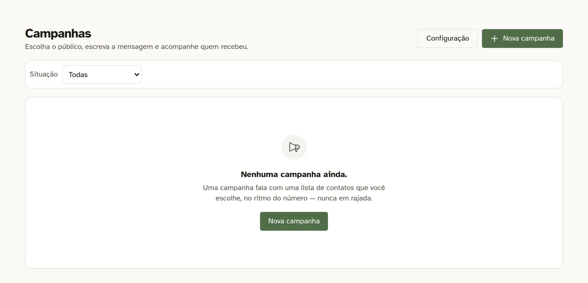
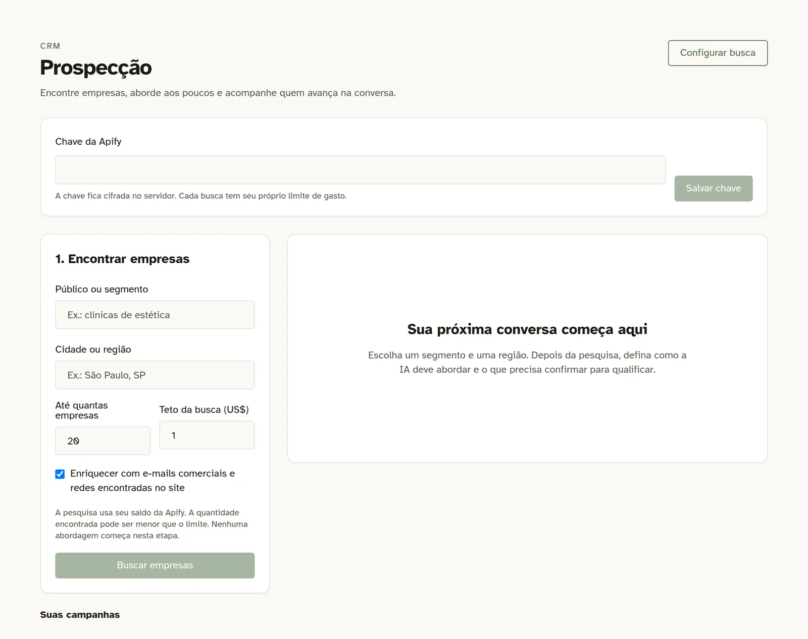

Resposta atrasada
O cliente pergunta, a equipe demora e o contato esfria.
O Thoth CRM transforma conversas em uma operação de vendas viva: vários números de WhatsApp, Instagram e Facebook, agentes de IA, funis, agenda, propostas, follow-ups e métricas — em um só lugar.

Sem sistema, ele espera. E amanhã pode ser tarde. Com o Thoth, a conversa recebe a resposta certa, o negócio entra no funil e, se o cliente sumir, o sistema pode retomar no momento definido.
O cliente pergunta, a equipe demora e o contato esfria.
Ninguém sabe quem atende quem, em qual canal ou em qual etapa.
Uma resposta errada de preço, horário ou promessa custa confiança.
Você investe em anúncio, mas não consegue ligar clique, conversa e venda.
O lead some e ninguém percebe até a oportunidade desaparecer.
Conversa, planilha, agenda, proposta e histórico vivem em lugares diferentes.
O Thoth reúne canais, pessoas, IA, funis, agenda, propostas, automações e métricas em uma operação contínua.
Você pode ter quantos agentes quiser: um para vendas, um para suporte, um para agendamento. Cada um com a sua voz, as suas regras e os funis em que pode mexer.

Exemplo de uma conversa de clínica. O caminho é o mesmo em qualquer negócio.
O agente de recepção recebe pelo canal e identifica o assunto.
Cruza o histórico da conversa com a base e as regras da empresa.
A resposta passa por checagens de regra, preço e horário antes de sair.
O agente preenche a ficha e move o negócio para a etapa certa.
Se o cliente some, o fluxo retoma dentro das regras e dos horários.
Os recursos abaixo são organizados como módulos de uma mesma operação, não como ferramentas isoladas.
WhatsApp, API oficial, Datafy, Instagram e Facebook chegam ao mesmo Inbox. A equipe visualiza conversa, cliente e negócio em tempo real.

Um agente pode vender, outro agendar, outro dar suporte. O roteador escolhe pelo assunto ou pelo número e a IA também pode operar o CRM.
Antes de enviar, a operação pode checar regras, preço, hora e endereço. Quando precisa, a conversa passa para uma pessoa com contexto.

Crie fluxos visuais de retomada por silêncio, etapa, lead novo ou caso aberto. O sistema sabe quando falar e quando parar.

Crie quantos funis quiser, com etapas, vocabulário, regras e até 50 campos por funil. A IA pode preencher o que descobre.

Google Agenda, Meet, lembretes, presença, propostas comerciais com IA, PDF no WhatsApp e recursos financeiros conforme o módulo.

Google Ads e Meta podem receber o resultado das etapas do funil. Links de WhatsApp rastreáveis ligam campanha, conversa e venda.

API, MCP, webhooks, n8n e automações permitem que o Thoth converse com sistemas, formulários, ERPs e agentes externos.

Capturas do sistema funcionando. Clique em uma imagem para ampliar.
Retomadas para consulta, exame e falta, agenda com Google e bloqueios opcionais para promessas clínicas.
Ver recursos →Funil por imóvel, agenda de visitas, anúncios rastreados e prospecção ativa.
Ver recursos →Produtos com fotos e preço, integração com Nuvemshop e pós-venda automático.
Ver recursos →Propostas em PDF pelo WhatsApp, múltiplos clientes e relatórios por canal.
Ver recursos →Formulários, campanhas, anúncios rastreados e retomada de leads que abandonaram.
Ver recursos →Contratos, parcelas e honorários, conforme o módulo opcional contratado.
Ver recursos →A implantação começa entendendo o seu negócio e termina com a equipe usando o sistema.
Mapeamos como sua empresa recebe, atende e acompanha clientes.
Conectamos canais, marca, funil, agentes, retomadas e base de conhecimento.
A equipe atende e, se quiser, a gente acompanha os números.
Todos partem da mesma base. O que muda é quanto da implantação e acompanhamento fica com você ou com a nossa equipe.
Você configura. Nós hospedamos e mantemos a base.
Para começar com a operação estruturada e testada.
Para quem quer revisar a operação com base no que acontece de verdade.
Algumas respostas importantes antes de decidir.
Ver guia prático ↗São 14 dias para usar o Thoth sem assinatura. Para a IA responder, você conecta a sua própria chave de API de IA, cobrada direto pelo fornecedor. Se quiser seguir, escolhemos o plano juntos.
Os valores da página são de referência para o Brasil. Os preços podem mudar e os valores para o mercado europeu, em euros, ainda estão sendo definidos. Fale com a gente para confirmar o valor atual.
A implantação, uma vez, e a mensalidade da empresa no sistema. A mensalidade cobre hospedagem, atualizações e suporte conforme o plano. IA, número oficial do WhatsApp e e-mail são cobrados à parte.
Sim. Você conecta vários números e cria quantos agentes quiser; o roteador decide quem atende cada conversa.
Sim. As mensagens chegam no mesmo Inbox, com atendimento humano e IA. Outras redes podem ficar vinculadas à conta, mas ainda não recebem mensagens no atendimento.
Só se você quiser. Você pode pausar e devolver a IA pelo celular com #off e #on, e ela chama uma pessoa quando precisa.
Existe risco em qualquer conexão não oficial. O Thoth usa ritmo, horários e modo de teste para reduzir o risco e também aceita o número da API oficial.
Cada resposta pode passar por checagens antes de sair, com teto de gasto e registro. No plano Acompanhado, a operação pode ser revisada com base nas conversas reais.
Sim, por API, MCP, webhook e automações. Se o seu sistema tem um jeito de receber ou enviar dados, existe uma rota de integração.
Os dados da sua empresa ficam separados dos de qualquer outra. Os detalhes de infraestrutura e backup devem ser confirmados no momento da contratação.
Teste o Thoth por 14 dias, sem assinatura, com o tipo de operação que você tem hoje.